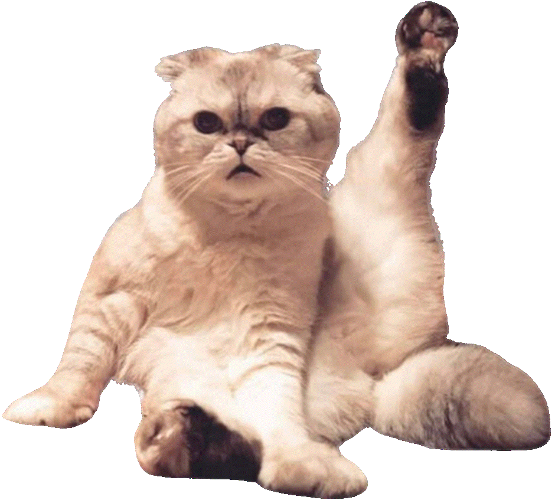

Swift's cat, Olivia. (Swift, Instagram)
“That is Mother,” said Eswyn Chen, a doctoral student in atmospheric science, gesturing at a life-size cutout of Taylor Swift. The audience—several dozen academics, students, and fans in a lecture hall, plus me—nodded in approval.
And then she launched into her version of Swift’s “Cardigan,” rewritten so the lyrics were no longer about the reenergizing nature of a romantic relationship, but instead about “contourf functions” and the “eddy-feedback parameter.”
This was “critical karaoke,” the climax of Tay Day, a conference held at the University of Liverpool’s Institute of Popular Music to celebrate the arrival of Swift’s Eras Tour in Britain. Over the accompaniment of a live band, one of the organizers, Amy Skjerseth, delivered a short paper on “mondegreens,” or misheard lyrics. (She once thought “I feel the lavender haze creeping up on me” was “I feel 11 turkeys creeping up on me.”) The other organizer, Samuel Murray, then delivered an essay on protest music to “Only the Young.” Chen was up last, declaring that she had dared herself to sing in public because it was her birthday. “Tofu pile—the only pick,” she sang about her experience of traveling to academic conferences. “Stressed-out staff, in Munich / When you are vegan, you get to eat nothing.” At the end, she turned around and took a selfie with the room. We all beamed and waved in the background.
The entire experience was—and I say this with love—one of the dorkiest things I have seen in my entire life. Let us pray that Ron DeSantis never hears that academics are delivering papers with titles like “Puurrfecting the Swift Brand and Feline Fandom in Taylor Swift Advertising Spots,” or he would start a full-blown campaign to defund the universities. But everyone here got the joke—the new field of Swift studies is both serious business and self-consciously awkward fun. Dorkiness is, after all, the core of Swift’s appeal.
What makes Swift the perfect artist for a media-saturated, overanalyzed culture is her ability to absorb painful breakups, tabloid headlines, industry sneers, fan backlashes, being upstaged by Kanye West, and losing control of her masters to Scooter Braun—and then turn these knock-backs into hit singles. This superpower of reversal is never more apparent than when someone tries to argue that Swift is uncool. Of course she is. She has written a lot of songs about it.
“When she broke into the mainstream, people criticized her for being cringe, and I think fans including myself were like, That’s the point,” Stephen Russell, a 25-year-old doctoral student who has been listening to Swift since she was marketed as a country artist, told me between sessions. “She is a little bit cringe. It’s very Millennial.” Russell thinks Swift has earned the respect of Gen Z by refusing to apologize for her Millennial cringe—for owning it, even. “I’ve spoken about this with people from generations before me, where it was very different in their day; they were much more concerned about being uncool,” Russell said. “But now being earnest and uncool has come around and become cool.” Gaucheness is authentic.
In the early years of social media, online Millennials adopted a cynical, ironic, snarky style as a defense mechanism. Daily referendums were conducted online about celebrity reputations, via news sites desperate for clicks. To give one example: In 2014, fans gathered on Tumblr to discuss whether Swift’s twerking in the “Shake It Off” video was cultural appropriation; those critiques then made it into mainstream coverage via Twitter.
At the time, Swift was countercultural: She stayed goofy and earnest, and stayed in touch with fans, sometimes reblogging their posts on Tumblr and adding her own commentary. In one famous post, she outed herself as a “basic autumn lover,” praising pumpkins, cinnamon, and dressing up dogs for Halloween. This image of wide-eyed naivete made her irresistible to internet bullies, cool girls, and hipsters alike. When Swift became the target of too much backlash, over her twerking and dating and feuding, she disappeared for almost three years—and then reappeared with Reputation, an album about finding love and joy despite being hated.
That led Swift to her great insight: Being uncool makes you relatable, even when you are a multimillionaire. In fact, her level of success makes one uncool by definition—as demonstrated by the Beatles, who are now revered as musical innovators but were dismissed during their early career as a band for screaming teenage girls who peed themselves with excitement at their concerts. Swift has associated her own high-caliber uncoolness with the more mundane version experienced by fans. In “We Are Never Ever Getting Back Together,” from her 2012 album, Red, Swift imagines a boyfriend who “would hide away and find your peace of mind / With some indie record that’s much cooler than mine.” She might have made the pop album, while you just own it—but in both cases, men are telling you that Radiohead is better.
Most teenagers feel uncool—a sentiment that adults never forget. That’s why so many of Swift’s lyrics are about high school—at 34, she is performing songs on the Eras Tour about the imagined experiences of half a lifetime ago. Think of the switched homeroom in “Betty,” or the narrator’s jealousy of the cheer captain in “You Belong With Me.” On her latest album, Swift frames Kim Kardashian—with whom she has feuded for several years—as a high-school bully who made her more determined to succeed. Swift even presents her relationship with the NFL player Travis Kelce as a redo of her adolescence: “I feel so high school / Every time I look at you,” she sings, casting herself as the nerd who finally gets to date a jock. “You know how to ball, I know Aristotle.”
The paradox of Taylor Swift is that no one is better at capturing the sense of unpopularity felt by the majority of teenagers than the most popular person in the entire world. Why does she feel like this? Because she’s a pop artist—and a female one at that, double reason for dismissal. She can’t sing, the complaint goes. (She can, and better than ever now that she’s dropped into a lower vocal range.) She can’t dance. (Partially true, but watch the video for “Delicate” to see her self-deprecating acknowledgment of this). She can only be this famous, her haters insist, because she’s bland. Again, Swift is ahead of the critics: “Clara Bow,” the final song on The Tortured Poets Department, is addressed to a starlet who “looks like Taylor Swift in this light” except that “you’ve got edge, she never did.”

(Taylor Swift, Twitter)
Taylor Swift’s embrace of uncoolness also reveals something deep about our culture: No one wants to admit to being powerful. Between sessions at Tay Day in Liverpool, I got to chatting with Amy Skjerseth about how the biggest pop star on the planet has managed to tell so many stories from an underdog perspective. “This came into question with Beyoncé as well,” she said, citing “Break My Soul,” where Beyoncé sings about how “they work me so damn hard / Work by nine, then off past five.” Listening to a multimillionaire presenting herself as a working-class heroine, Skjerseth said, “everyone is going, ‘Wait, hold on.’”
A similar pattern is evident in Swift’s embrace of feminism. I feel sorry for Joe Alwyn and Matty Healy, her two most recent exes; on Tortured Poets, one is accused of stealing the best days of her youth and the other of carrying on like Lord Byron while actually resembling a “tattooed golden retriever.” For decades, the complaint by feminists has been that men got to define reality—they were the subjects, while women were mere objects. Well, ask any of Swift’s less famous, less successful exes if that is true for them.

Today, Swift is even claimed by marginalized groups to which she doesn’t belong. In January, The New York Times ran an op-ed that skated around the long-running Gaylor conspiracy theory, which holds that Swift is a closeted lesbian. “What if the ‘Lover Era’ was merely Ms. Swift’s attempt to douse her work—and herself—in rainbows, as so many baby queers feel compelled to do as they come out to the world?” Anna Marks wrote. Come on. How much more enthusiastically heterosexual does Marks need Swift to be before she’ll believe her? At Tay Day, Kasey Clark, a lecturer in environmental change at the University of Liverpool, and her graduate student Anna Basham offered “An Interpretation of Taylor Swift’s Music From a Queer Lens.” The pair didn’t try to argue that Swift was secretly gay, but instead that the intensely personal quality of her music encouraged queer fans to identify themselves with her. “Taylor is an amazing ally,” the final slide concluded. “Thank you to our inclusive queen, Taylor Swift.”
@taylorswift Basic autumn lovers RISE 🍂🧣#imsohappy #hellofall #swifttok ♬ I LOVE THE FALL - Taylor Swift
So this is what we demand from our artists: the modern virtues of accessibility, relatability, and inclusion. Personal triumphs can be celebrated, but only as revenge against naysayers and oppressors. And everyone is entitled to a little piece of the artist that has to speak directly to them. To me, this sounds like an incredible burden on Swift, but she uses even fan entitlement as fuel for her creative fire: On the Eras Tour, you can watch tens of thousands of people sing along to lyrics about how stifling their attention is, all those “Sarahs and Hannahs in their Sunday best … sanctimoniously performing soliloquies I’ll never see.”
Some of my best friends are Sarahs and Hannahs. Lots of us are basic, and we deserve music too. The night after the Tay Day conference, I joined more than 50,000 other people in seeing Swift perform the first of three concerts at Anfield, the home stadium of Liverpool Football Club. The concert was full of people letting their non-freak flag fly. Moms brought their daughters; girls in homemade bodysuits traded friendship bracelets with one another in line for the merch stand; supportive boyfriends wore Chiefs shirts with Travis Kelce’s number, 87, on the back.
Every day, I’m bombarded with swivel-eyed social-media posts by right-wing influencers about the degenerate West heading for sterile, atomized dysfunction, probably as a result of feminism. They should get a ticket for the Eras Tour and reconsider their most deeply held beliefs. Two couples in the rows behind us got engaged during “Cardigan” (sadly not the version about atmospheric science), and Lord knows how many more did the same during “Love Story,” which at some point in the past 18 months became the designated proposal song of the set list. Even the stoniest-hearted person in the stadium—me—welled up during “22,” when Taylor walked to the front of the stage to bestow her trilby hat on an ecstatic child. I have friends with children and responsibilities and proper grown-up jobs who were rendered insensible for hours after clips emerged from the third London show of Kelce making a surprise appearance onstage. Who needs to be cool when you can have your 6-foot-5, Super Bowl–winning boyfriend sweep you into his arms in front of a cheering crowd?
Between Tay Day and the stadium, my 48-hour immersion in Swift studies left me admiring anyone who could withstand all of this hoopla and still be so, well, normal. Swift survived the gladiatorial arena of early social media, refusing to slink away or shrink herself. She takes every setback she’s suffered and gives it a hook that begs to be sung in the car. And she has offered millions of teenagers—and their parents—the purest freedom of all, the freedom to be an absolute dork.